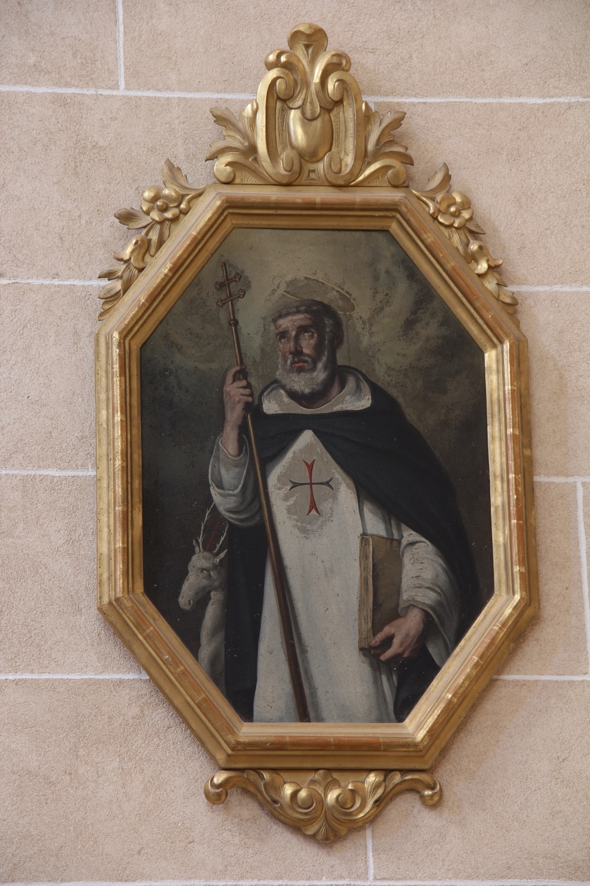

Sant Fèlix de Valois (1127-1212) va ser un anacoreta francès, membre de la casa reial francesa dels Valois, que, segons la tradició, cofundà amb sant Joan de Mata l’Orde de la Santíssima Trinitat i de la Redempció de Captius, coneguda també com a Orde Trinitària. Tanmateix, el seu paper en la fundació de l’orde és objecte de debat i podria ser que els trinitaris haguessin reforçat a posteriori el seu paper per relacionar els orígens de l’orde amb la casa dels Valois. Segons aquesta mateixa tradició trinitària, Fèlix fou monjo cistercenc i participà en les croades. En tornar, s’uní a una petita comunitat d’ermitans a Cerfroid, a uns 80 km de París. Allà conegué a Joan de Mata quan aquest s’hi retirà a meditar després d’una visió mística en la que veié un mandat diví de fundar una orde religiosa dedicada al rescat de cristians captius. Tots dos fundaren l’Orde Trinitària i establiren a Cerfroid el primer monestir de l’orde.
En aquesta pintura d’Agustí Buades i Muntaner (s. XIX), sant Fèlix apareix amb barba grisa, un tret habitual en la seva iconografia que ajuda a diferenciar-lo de sant Joan de Mata, representat habitualment més jove. Va vestit amb l’hàbit trinitari: túnica blanca amb la creu blava i vermella al pit, símbol de l’orde, i capa negra. Sosté un bàcul que ens recorda el seu càrrec de superior del monestir de Cerfroid, així com un llibre que representa la regla de l’orde.
El cérvol que l’acompanya fa referència a una llegenda vinculada als orígens de l’orde, segons la qual un cérvol amb una creu blava i vermella entre les banyes s’aparegué a sant Fèlix i sant Joan. Els dos ermitans el seguiren fins que l’animal s’aturà a beure d’una font, s’hi agenollà davant ells i desaparegué. Interpretaren aquell fet com un signe diví i decidiren fundar en aquell lloc el monestir de Cerfroid. La llegenda explicava també l’origen del topònim Cerfroid a partir de les paraules franceses cerf (“cérvol”) i froid (“fred”), perquè el cérvol s’hauria refrescat a la font. En realitat, però, el nom del lloc ja existia prèviament, i la narració es va elaborar a posteriori per donar un origen providencial al monestir.